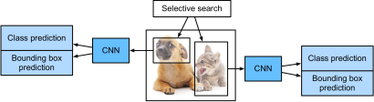
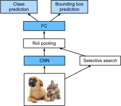
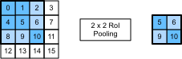
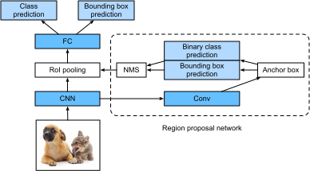
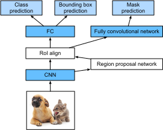

14.8. 基于区域的卷积神经网络（R-CNN）¶
除了 14.7节 中介绍的单发多框检测之外， 基于区域的 CNN（region-based CNN）或具有 CNN 特征的区域（R-CNN） 也是将深度学习 应用于目标检测的 众多开创性方法之一 (Girshick et al., 2014)。 本节将介绍 R-CNN 及其一系列改进：fast R-CNN (Girshick, 2015)、faster R-CNN (Ren et al., 2015)， 以及 mask R-CNN (He et al., 2017)。 由于篇幅有限，我们只 关注这些模型的设计。
14.8.1. R-CNN¶
R-CNN 首先从输入图像中 提取许多（例如 2000 个）区域提议（region proposal） （例如，锚框也可以看作区域提议）， 并标注它们的类别和边界框（例如偏移量）。
然后使用一个 CNN 对每个区域提议 执行前向传播以提取其特征。 接下来，把每个区域提议的特征 用于预测该区域提议的 类别和边界框。

图14.8.1 R-CNN 模型。¶
图14.8.1 展示了 R-CNN 模型。更具体地说，R-CNN 由以下四个步骤组成：
在输入图像上执行选择性搜索（selective search），提取多个高质量的区域提议 (Uijlings et al., 2013)。这些提议区域通常在多个尺度上选取，具有不同的形状和大小。每个区域提议都会被标注一个类别和一个真实边界框。
选择一个预训练的 CNN，并将其在输出层之前截断。把每个区域提议调整为网络所需的输入大小，并通过前向传播输出为该区域提议提取的特征。
把每个区域提议所提取的特征和标注的类别作为一个样例。训练多个支持向量机来对目标进行分类，其中每个支持向量机分别判定该样例是否包含某个特定的类别。
把每个区域提议所提取的特征和标注的边界框作为一个样例。训练一个线性回归模型来预测真实边界框。
尽管 R-CNN 模型使用预训练的 CNN 有效地提取图像特征， 但它的速度很慢。 想象一下，我们从一个输入图像中 选出数千个区域提议： 这需要数千次 CNN 前向传播才能完成目标检测。 如此巨大的 计算负载使得 R-CNN 难以在现实应用中广泛使用。
14.8.2. Fast R-CNN¶
R-CNN 的主要性能瓶颈在于 对每个区域提议独立进行 CNN 前向传播， 而没有共享计算。 由于这些区域通常 相互重叠， 独立的特征提取导致 大量重复计算。 相对于 R-CNN，fast R-CNN 的一项主要改进是 CNN 前向传播 只在整个图像上 执行一次 (Girshick, 2015)。

图14.8.2 fast R-CNN 模型。¶
图14.8.2 描述了 fast R-CNN 模型。其主要计算如下：
与 R-CNN 相比，在 fast R-CNN 中，用于特征提取的 CNN 的输入是整个图像，而不是单个区域提议。此外，这个 CNN 是可训练的。给定一幅输入图像，设 CNN 输出的形状为 \(1 \times c \times h_1 \times w_1\)。
假设选择性搜索产生了 \(n\) 个区域提议。这些（形状不同的）区域提议在 CNN 输出上标出感兴趣的（形状不同的）区域。然后，这些感兴趣区域进一步提取相同形状的特征（即指定高度 \(h_2\) 和宽度 \(w_2\)），以便于连结。为了实现这一点，fast R-CNN 引入了感兴趣区域（region of interest，RoI）汇聚层：CNN 输出和区域提议被输入到该层，输出形状为 \(n \times c \times h_2 \times w_2\) 的连结特征，这些特征是为所有区域提议进一步提取的。
使用全连接层，把连结特征变换为形状为 \(n \times d\) 的输出，其中 \(d\) 取决于模型设计。
为 \(n\) 个区域提议中的每一个预测类别和边界框。更具体地说，在类别预测和边界框预测中，分别把全连接层的输出变换为形状为 \(n \times q\) 的输出（\(q\) 是类别数量）和形状为 \(n \times 4\) 的输出。类别预测使用 softmax 回归。
fast R-CNN 中提出的感兴趣区域汇聚层与 7.5节 中介绍的汇聚层不同。 在汇聚层中， 我们通过指定汇聚窗口、填充和步幅的 大小 来间接控制输出形状。 相比之下， 在感兴趣区域汇聚层中， 我们可以直接指定输出形状。
例如，让我们为每个区域指定 输出高度和宽度 分别为 \(h_2\) 和 \(w_2\)。 对于任何形状为 \(h \times w\) 的 感兴趣区域窗口， 该窗口被划分为由子窗口组成的 \(h_2 \times w_2\) 网格， 其中每个子窗口的形状约为 \((h/h_2) \times (w/w_2)\)。 在实践中， 任何子窗口的高度和宽度都应向上取整，并使用最大的元素作为子窗口的输出。 因此，即使感兴趣区域的形状不同， 感兴趣区域汇聚层也能 提取相同形状的特征。
作为一个说明性示例， 在 图14.8.3 中， 在一个 \(4 \times 4\) 的输入上 选出左上角的 \(3\times 3\) 感兴趣区域。 对于这个感兴趣区域， 我们使用一个 \(2\times 2\) 的感兴趣区域汇聚层来得到 \(2\times 2\) 的输出。 请注意， 划分出的四个子窗口 分别包含元素 0、1、4、5（最大值为 5）； 2、6（最大值为 6）； 8、9（最大值为 9）； 以及 10。

图14.8.3 一个 \(2\times 2\) 的感兴趣区域汇聚层。¶
下面我们演示感兴趣区域汇聚层的计算。假设 CNN 提取的特征 X
的高度和宽度都是 4，并且只有一个通道。
import torch
import torchvision
X = torch.arange(16.).reshape(1, 1, 4, 4)
X
from mxnet import np, npx
npx.set_np()
X = np.arange(16).reshape(1, 1, 4, 4)
X
再进一步假设 输入图像的高度和宽度都是 40 像素，并且选择性搜索在该图像上生成了两个区域提议。 每个区域提议 表示为五个元素： 其目标类别，随后是 左上角和右下角的 \((x, y)\) 坐标。
rois = torch.Tensor([[0, 0, 0, 20, 20], [0, 0, 10, 30, 30]])
rois = np.array([[0, 0, 0, 20, 20], [0, 0, 10, 30, 30]])
由于 X 的高度和宽度是输入图像高度和宽度的 \(1/10\)，
按照指定的 spatial_scale 参数， 两个区域提议的坐标 都乘以 0.1。
然后，这两个感兴趣区域在 X 上分别标记为 X[:, :, 0:3, 0:3] 和
X[:, :, 1:4, 0:4]。 最后在 \(2\times 2\) 的感兴趣区域汇聚中，
每个感兴趣区域被划分为 子窗口组成的网格，以 进一步提取相同形状
\(2\times 2\) 的特征。
torchvision.ops.roi_pool(X, rois, output_size=(2, 2), spatial_scale=0.1)
npx.roi_pooling(X, rois, pooled_size=(2, 2), spatial_scale=0.1)
14.8.3. Faster R-CNN¶
为了在目标检测中更准确， fast R-CNN 模型 通常不得不在选择性搜索中 生成大量区域提议。 为了在保证准确率的同时 减少区域提议， faster R-CNN 提出用区域提议网络（region proposal network）代替选择性搜索 (Ren et al., 2015)。

图14.8.4 faster R-CNN 模型。¶
图14.8.4 展示了 faster R-CNN 模型。与 fast R-CNN 相比， faster R-CNN 只是把 区域提议方法 从选择性搜索改为区域提议网络。 模型的其余部分保持 不变。 区域提议网络 按以下步骤工作：
使用填充为 1 的 \(3\times 3\) 卷积层，把 CNN 输出变换为具有 \(c\) 个通道的新输出。这样，CNN 提取的特征图沿空间维度的每个单元都会得到一个长度为 \(c\) 的新特征向量。
以特征图的每个像素为中心，生成多个不同尺度和宽高比的锚框并对其进行标注。
利用每个锚框中心处长度为 \(c\) 的特征向量，预测该锚框的二分类类别（背景或目标）和边界框。
考虑那些预测类别为目标的预测边界框。使用非极大值抑制移除重叠的结果。其余的目标预测边界框就是感兴趣区域汇聚层所需的区域提议。
值得注意的是， 作为 faster R-CNN 模型的一部分， 区域提议网络 与模型的其余部分联合训练。 换句话说，faster R-CNN 的目标函数 不仅包括 目标检测中的类别预测和边界框预测， 还包括区域提议网络中 锚框的二分类类别预测和边界框预测。 作为端到端训练的结果， 区域提议网络学会了 如何生成高质量的区域提议， 从而在区域提议数量减少 （这些区域提议由数据学习得到）的情况下 仍能保持目标检测的准确率。
14.8.4. Mask R-CNN¶
在训练数据集中， 如果还在图像上标注了目标的 像素级位置， mask R-CNN 就可以有效利用 这些详细标签 来进一步提高目标检测的准确率 (He et al., 2017)。

图14.8.5 mask R-CNN 模型。¶
如 图14.8.5 所示， mask R-CNN 是在 faster R-CNN 的基础上修改得到的。 具体地说， mask R-CNN 把 感兴趣区域汇聚层替换为 感兴趣区域（RoI）对齐层。 该感兴趣区域对齐层 使用双线性插值 来保留特征图上的空间信息，这更适合像素级预测。 该层的输出 包含所有感兴趣区域的 相同形状的特征图。 这些特征图 不仅用于预测 每个感兴趣区域的类别和边界框， 还通过一个额外的全卷积网络 预测目标的像素级位置。 关于使用全卷积网络预测图像像素级语义的更多细节 将在本章后续小节中 给出。
14.8.5. 小结¶
R-CNN 从输入图像中提取许多区域提议，使用 CNN 对每个区域提议执行前向传播以提取其特征，然后利用这些特征预测该区域提议的类别和边界框。
相对于 R-CNN，fast R-CNN 的一项主要改进是 CNN 前向传播只在整个图像上执行。它还引入了感兴趣区域汇聚层，使得可以为形状不同的感兴趣区域进一步提取相同形状的特征。
faster R-CNN 用联合训练的区域提议网络替换 fast R-CNN 中使用的选择性搜索，从而在区域提议数量减少的情况下仍能保持目标检测的准确率。
在 faster R-CNN 的基础上，mask R-CNN 额外引入一个全卷积网络，从而利用像素级标签进一步提高目标检测的准确率。
14.8.6. 练习¶
我们能否把目标检测看作单一的回归问题，例如预测边界框和类别概率？你可以参考 YOLO 模型的设计 (Redmon et al., 2016)。
比较单发多框检测与本节介绍的方法。它们的主要区别是什么？你可以参考 Zhao et al. (2019) 的图 2。